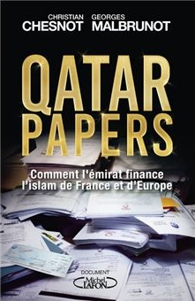

5:08 · 1 OPERA
The most plausible explanation is always money...
Il filo del discorso
Un intervento in inglese interpreta i finanziamenti esteri a istituzioni, organizzazioni non governative e centri di ricerca come strumenti di influenza politica. Il relatore parte dal caso di un centro norvegese e dalla provenienza di parte delle sue risorse, quindi richiama l’inchiesta indicata come Qatargate e il libro Qatar Papers. Allarga poi il discorso ai rapporti fra paesi del Golfo e istituzioni occidentali, sostenendo che il bisogno di denaro induca politici e organizzazioni a rinunciare alla trasparenza e alla critica. La conclusione propone restrizioni generalizzate alle organizzazioni musulmane. La scheda descrive la struttura dell’argomentazione: accuse, cifre, collegamenti causali e proposte appartengono al relatore e non costituiscono accertamenti redazionali.
I libri nel discorso

Qatar Papers
Identificazione probabile
Copertina: Michel Lafon, 2019 · edizione francese
Copertina dell’edizione francese Qatar Papers. Comment l’émirat finance l’islam de France et d’Europe. Non è un’edizione identificata nel video; l’identificazione della citazione resta probabile.
Il Nel passaggio citato: 07 nomina espressamente il libro Qatar Papers e gli attribuisce una documentazione dei finanziamenti a progetti collegati ai Fratelli musulmani.
Passaggio 2:46 ↗ · Fonti e libro ↗